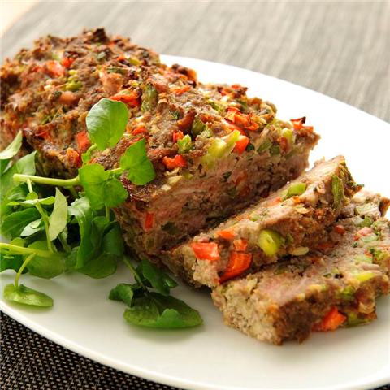

Dit gehaktbrood kan prima bij een avondmaaltijd, maar ook is het makkelijk gerecht voor een buffet.
1. Warm de oven op 175 graden
2 Maak de paprika's schoon en snijd ze in kleine stukjes. Maak de ui schoon en snij deze fijn. Maak de knoflook schoon. Snijd de bacon in dunne reepjes hak de peterselie fijn.
3. Doe het gehakt, paprika, ui, bacon, peterselie, ei, tomatenpuree, tabasco en peper in een kom. Pers de tenen knoflook er boven uit en kneed goed totdat alle ingredienten zijn gemengd.
4. Druk het mengsel in een cake vorm en bak deze ongeveer 1 uur in de oven.
5. Haal de vorm uit de oven. Laat hem even afkoelen en haal het daarna uit de vorm. Serveer het gehaktbrood op een schotel.
